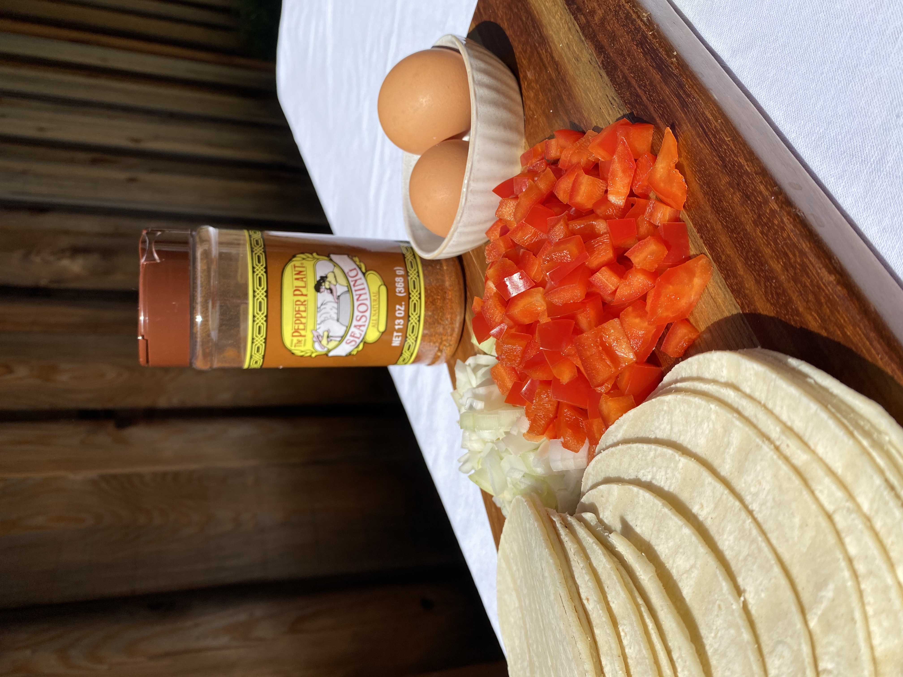
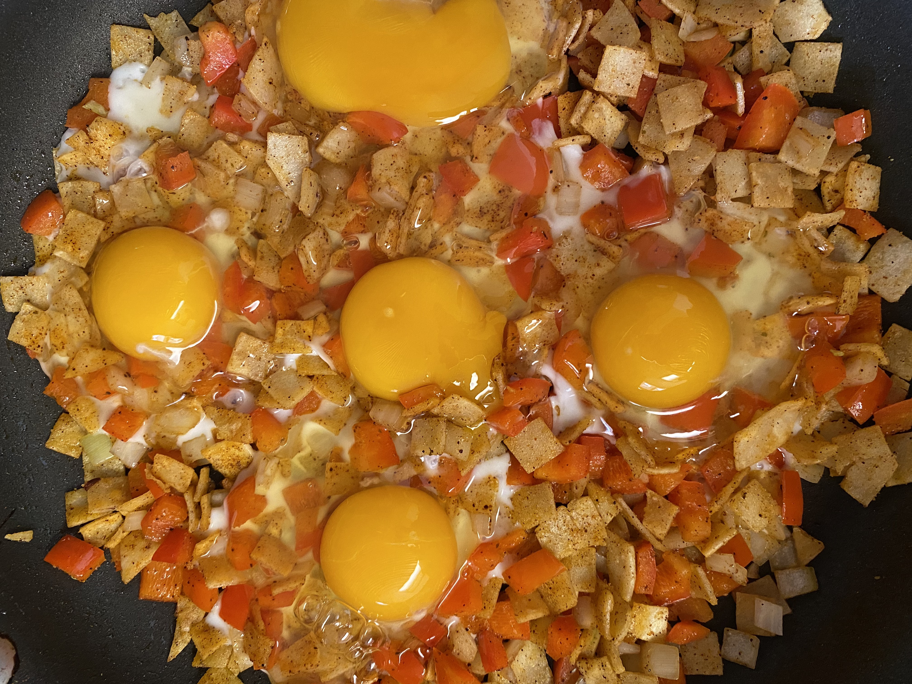

Chilaquiles is a traditional Mexican breakfast made with homemade tortillas chips scrambled with eggs. It’s a great dish to use your leftovers, such as steak, ham, veggies, beans, potatoes, cheese or whatever you have in the fridge. If I have leftovers from a prior meal, I usually add it to my Chilaquiles. You really just need 4 ingredients for Chilaquiles: eggs, tortillas, oil and seasoning. But to make it your own, add your favorite meat, veggies, or leftovers you want. No matter what you add to your Chilaquiles, you will not be disappointed.
I chose to go simple this time around with sauteed onions and red bell peppers for my Chilaquiles. Personally, I really enjoy the tortillas to be extra crispy and seasoned well, but some people like the tortillas soft. I garnished the Chilaquiles with some cilantro and leftover salsa.
Leftover Chilaquiles
Ingredients
- 8 Corn tortillas (2 per/person)
- 8 Eggs (2 per/person)
- 1/2 Onion
- 1 Red Bell Pepper
- 1 tablespoon Oil
- ½ - 1 teaspoon The Pepper Plant Seasoning
- Cilantro for garnishing
Instructions
- Heat pan on medium high. Cut tortillas into square pieces then add to pan.
- Season with Pepper Plant Seasoning and drizzle oil over tortillas. Cook until tortillas are crispy, about 10 minutes.
- While tortillas are cooking, dice bell peppers and onions. Add to crispy tortillas and sauté till soft.
- Then add eggs and scrabble with the tortillas, onions and bell peppers. Cook till eggs are done.
Prep. 10 min. | Cook 15 min. | Total Time: 25 minutes | Serves: 4